Current, Voltage and Resistance
1.) Which of the following statements is NOT true about electricity?
2.) Electric current will only flow if there are charges that can move freely. Metals contain many free electrons, which allows electric current to flow so well in them. Which way do electrons flow in a circuit?
3.) Electrolytes are liquids that contain charges, which can move freely. They are either ions dissolved in water, like salt solution, or molten ionic liquids. When a voltage is applied to an electrolyte, which way do the charges move?
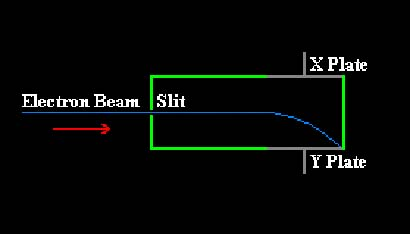
4.) Study the diagram carefully. A stream of electrons is made to pass through a narrow slit and then through two parallel plates. The electrons are seen to make a downwardly curved path. Which of the following is the most likely reason why the electrons take such a path through the plates?
Circuits
5.) An ammeter measures current in amps. Where should it be placed in a circuit?
6.) A voltmeter measures potential difference in volts. Where should it be placed in a circuit?
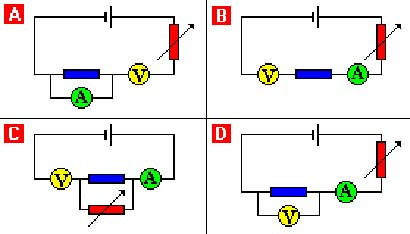
7.) Study the diagrams carefully. Which one shows the ammeter and voltmeter correctly placed in the circuit?
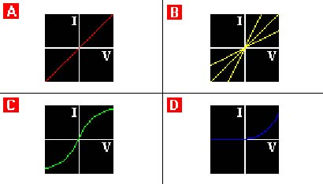
8.) The diagrams show Voltage - Current graphs. Which of the following is the correct component's for each graph?
9.) A circuit has two cells, each having a voltage of 1.5 Volts. The current flowing is measured to be 50 milliamps (0.05 Amps). What is the total resistance in the circuit?
10.) A voltage - current graph is plotted with voltage along the horizontal axis (x), and current up the vertical axis (y). Which of the following statements is NOT true about resistance on this graph?
Circuit Symbols and Devices
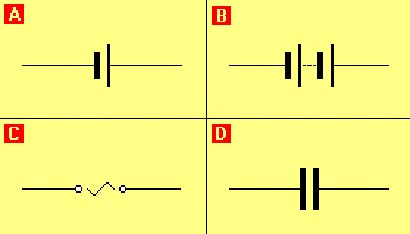
11.) Which of the following are the correct names for the symbols in the diagram?
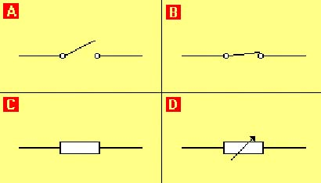
12.) Which of the following are the correct names for the symbols in the diagram?
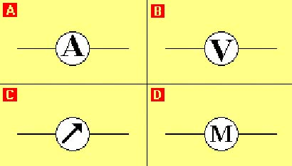
13.) Which of the following are the correct names for the symbols in the diagram?
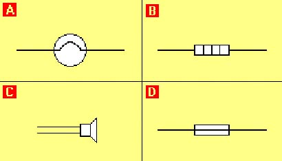
14.) Which of the following are the correct names for the symbols in the diagram?
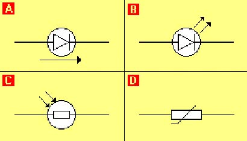
15.) Which of the following are the correct names for the symbols in the diagram?
16.) Which of the following electronic components below can be adjusted to alter the current flowing through a circuit?
17.) Which of the electronic components below can be used to store charge and energy?
18.) An electronic circuit is to be designed so it will turn a fan on when the temperature gets above a certain value. Which of these components must it contain?
19.) Which of the following statements is NOT true about Diodes?
20.) Electric meters can be used to measure current and potential difference. Which of the following cannot be used as an electric meter?
21.) Street lamps automatically turn on when the level of light falls below a certain value. Which component should the electrical circuit of a street lamp contain?
22.) A simple rain detector circuit contains a buzzer that sounds when rain falls on the circuit contacts. What can be concluded about rain drops from this?
Series Circuits
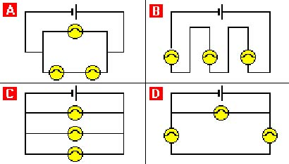
23.) Study the diagrams carefully. Which of the circuits has all the lamps connected in series?
24.) Which of the following statements is NOT true about series circuits?
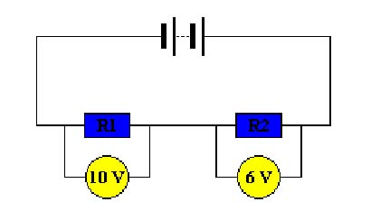
25.) Study the diagram carefully. Using the information given in the circuit, what is the potential difference across the battery?
26.) Two light bulbs of resistance 2 Ohms and 3 Ohms are connected in series with a 10 Volt battery. What is the potential difference across the 2 Ohm bulb?
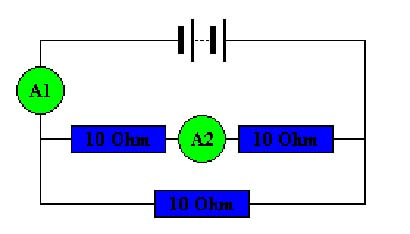
27.) A series circuit contains three resistors. If the resistance of resistor "A" is 3 ohms, and "B" is 6 Ohms, what is the resistance of "C", if the total resistance of the circuit is 11 Ohms?
28.) Which of the following statements is NOT true about series circuits?
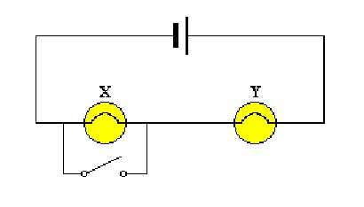
29.) Study the diagram carefully. It shows two 1.5 V bulbs connected in series to a 1.5 V cell. The bulb "X" has a switch connected in parallel with it. What will be observed when the switch is closed?
Parallel Circuits
30.) Study the diagrams carefully. Which of the circuits has all the lamps connected in parallel?
31.) Which of the following statements is NOT true about parallel circuits?
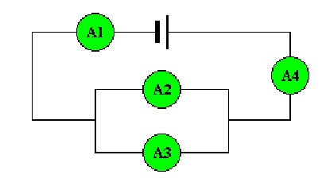
32.) Study the diagram carefully. It shows four identical ammeters connected in a circuit. Which of the following statements about the readings on the ammeters is correct?
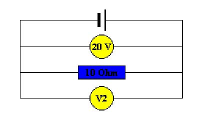
33.) The diagram shows two voltmeters connected with a 10 Ohm resistor. If the reading on V1 is 20 Volts, what is the reading on V2?
34.) Which of the following statements is NOT true about parallel circuits?
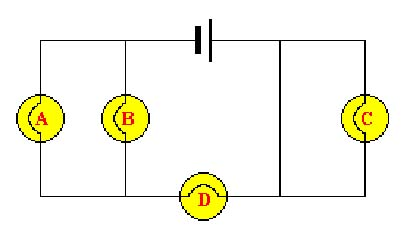
35.) Study the diagram carefully. One of the lamps has fused and caused the others to go out. Which lamp has fused?
Static Electricity
36.) When a plastic comb is rubbed on some cloth, it is found that the comb attracts small pieces of paper. Why does this happen?
37.) An acetate comb is given a positive charge by rubbing it with a piece of cloth. The cloth is then tested for electric charge. What charge would you expect the cloth to have?
38.) Which of the following statements is NOT true about the build up of static electricity caused by friction?
39.) Which of the following statements IS true about electrostatic charges?
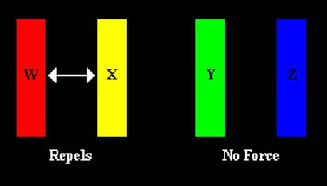
40.) The diagram shows four plastic rods that are used in an electrostatic experiment. Each rod may be charged or uncharged and it is found that "W" repels "X", but "Y" exerts no force on "Z". What does this indicate about the nature of the charge on the plastic rods?
41.) Charge tends to be induced in an uncharged object, when a charged object is brought near the uncharged object. This is because electrons in the uncharged object move away or towards the charged object. Which of the following statements is the correct result of this?
42.) Which of the following statements is NOT true about high voltages?
43.) Photocopiers use static charge to attract toner to where it is needed on the paper. Spray painting cars uses a similar methdThe spray nozzle is connected to a +ve terminal, making the paint positively chargdHow is the paint then attracted to the car?
44.) In order to remove dust particles from the emissions made by a factory, charged plates are placed inside a chimney. Why does this arrangement work?
45.) A car can gain a charge as air rushes over, rubbing off electrons from it. This charge can give you a shock if you touch the outside. Why is this?
46.) When synthetic clothes are dragged over each other in a tumble drier, static charges build up on them. These forces of attraction cause the clothes to stick together and little sparks as the charges rearrange themselves. How are these charges formed in the first place?
Energy in Circuits
47.) Anything that supplies electricity is also supplying energy. Which of the following statements is NOT true?
48.) All resistors produce heat when a current flows through them. Which of the following statements is NOT true?
49.) Electricity can produce four effects. Which of the following components will NOT produce the described effect?
50.) Energy is transffered to the electric charge at the power source. The charge gives up its energy when voltage changes as it travels through any voltage components elsewhere in the circuit. Which of the following statements is true?
51.) What is Charge (Q) measured in?
52.) Which of the following is equivalent to one coulomb per second?
53.) Which of the following is the energy transferred per unit charge passed?
54.) Which of the following formulae correctly relates voltage, charge and energy?
55.) A circuit uses a total charge of 5000 coulombs. The supply to the circuit has a potential difference of 25v. How much energy does the circuit transfer?
56.) Which of the following formulae correctly relates current, charge and time?
57.) The current flowing around a circuit is measured to be 3.5 Amps. If this circuit is left on for one minute, what will be the total charge used?
Electricity Bills
58.) The Units that your electricity meter counts in are known as Kilowatt-hours. What is a Kilowatt-hour?
59.) How many Joules of energy does a Kilowatt-hour represent?
60.) If the price per Unit of energy is 6p, what would be the cost of leaving a 2kW fire on for 3 hours?
Mains Electricity
61.) Pets and electricity are a hazard waiting to happen. Damaged plugs or too many plugs in one socket are also electrical hazards. Which of the following is NOT an electrical hazard?
62.) It is very important to wire a plug safely. Which of the following pieces of advice about wiring a plug is dangerous?
63.) In a normal three-pin plug, where is the fuse connected?
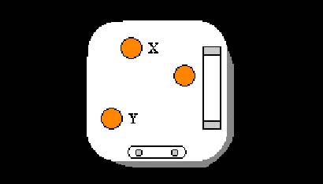
64.) Study the diagram carefully. It shows the inside of a mains plug with one of the connections marked X and another Y . Which of the statements below is correct?
65.) The live wire has touched the earthed metal case of an electric toaster. Which of the following is the most likely result?
66.) Why is the outer casing of an electric toaster connected to earth?
67.) It is important to have the correct fuse for an appliance. Which of the following statements is true about the rating of a fuse?
68.) Which of the following statements about earthing is NOT true?
The National Grid
69.) All power stations that use fuel basically work in the same way. Which of the following statements is the correct order of operation?
70.) Which of the following statements is NOT true about the National Grid?
71.) A local transformer substation changes the electrical supply to a village. The purpose of the substation is to decrease one of the quantities below. Which one?
72.) Which of the following statements is NOT true about the transmission of electricity?
Mixed Bag
73.) Several appliances are often run from one socket by using an adapter. If the mains supply is 240V and an adapter has a 10A fuse, which combination of appliances could be run from the adapter?
74.) A toaster has an electrical power rating of 1000 Watts. If it is left on for 60 seconds, how much energy will be transferred?
75.) Which of the following combinations of apparatus would be needed to determine the electrical power of a heating coil?
76.) Static can build up as fuel flows out of a pipe, paper drags over rollers, or when grain shoots out of pipes. This is a serious hazard as the build up of static can lead to a spark, which in these dusty or fumy environments may cause an explosion. How can the build up of static be stopped?
77.) A 3-pin plug has metal parts made from copper or brass because these are very good conductors. Which of the statements below is NOT a feature of the standard 3-pin plug?
78.) Two light bulbs of resistance 6 Ohms and 3 Ohms are connected in series making a total of 9 Ohms of resistance. When connected to an 18 Volt battery. What is the current through the 6 Ohm bulb?
79.) A circuit contains a resistor with value 20 Ohms. The current flowing in the circuit is 5 Amps. What is the total potential difference of the cells in the circuit?
80.) A series circuit contains a resistors, "A", and a 24 Volt battery. If 3 Amps flow around the circuit, what is the resistance of resistor "A"?
81.) The diagram shows a circuit. If 3A of current is flowing through ammeter A1 how much would be flowing through ammeter A2?
82.) A circuit uses a total charge of one million coulombs. What is the circuits supply voltage if it transfers 2500 Joules of energy?
83.) A 12 Watt torch bulb is lit by connecting it to 4 x 6 Volt batteries. 0.5 Amps flow through the torch when it is on. What resistance does the torch bulb have?
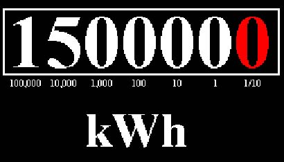
84.) Study the diagram carefully. It shows the reading on an electricity meter. How many units of energy does the reading represent?
85.) For lightning to occur, a huge voltage must exist between a cloud and the Earth. For this voltage to grow in size, what charge do the raindrops fall to the Earth with?
86.) A circuit uses a total charge of 3600 coulombs in 24 minutes. What will be the current flowing around the circuit?
87.) The diagram shows similar cells, ammeters and resistors. If the cells deliver a total potential difference of 12 Volts and a current of 1.8 Amps flows through A1, what is the current flowing through A2?
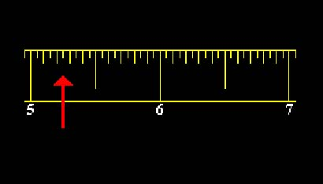
88.) Study the diagram carefully. It shows part of the scale of a voltmeter. What is the reading on the voltmeter?
89.) The diagram shows four plastic rods that are used in an electrostatic experiment. Each rod may be charged or uncharged and it is found that W repels X , but Y exerts no force on Z . What does this indicate about the the forces between the pairings?
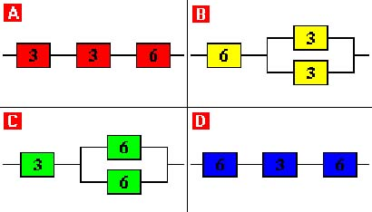
90.) The diagrams show resistors of 3 Ohm and 6 Ohm connected in different arrangements. Which arrangement has the smallest total resistance? To calculate the resistance of resistors in parallel, use: (1/R) = (1/R1) + (1/R2)
91.) In an electric circuit, a bulb is to be fitted as a warning light and it is essential that the resistance is as low as possible. Which bulb should you use?
92.) The current flowing around a circuit is measured to be 500mA (0.5A). If the total charge used is 6000 coulombs, how long was the circuit on for?
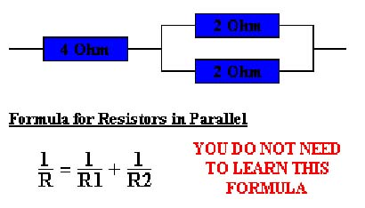
93.) Study the diagram carefully. Resistors of 2 Ohm and 4 Ohm are connected as shown. Use the formula in the diagram, and others that you have learnt, to answer this question. What would the potential difference across the arrangement be, if the current entering is 2 Amps?
94.) A straight-line voltage - current graph is plotted with voltage along the horizontal axis (x), and current up the vertical axis (y). The gradient of the line is 0.0625. What is the resistance of the component under test?
95.) The diagrams show resistors of 2 Ohm and 4 Ohm connected in different arrangements. Which arrangement has a total resistance of 4 Ohms? To calculate the resistance of resistors in parallel, use: (1/R) = (1/R1) + (1/R2)
96.) A circuit transfers 720 Joules of energy. If the supply voltage is 240 Volts, how much charge will have flown around the circuit?
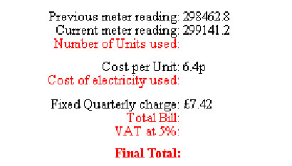
97.) Study the diagram carefully. It shows an electricity bill. Work through the bill filling in the missing gaps. What is the final total for this bill?
98.) Fuses are available which melt when the current through them exceeds 2, 5, 13, 15 or 30 Amps. Which of these would be most suitable for an electric fire rated at 2.5kW, if the supply voltage is 240V?
99.) A circuit has a total resistance of 200 Ohms. The total voltage of the cells in the circuit is 6 Volts. How much current is flowing in the circuit?
100.) A 2.5kW heater is connected to the 240V mains supply. The cable connecting the plug to the heater has worn thin in places and so needs replacing. From the list below, which is the most suitable replacement cable?
0
Wrong:
0
Attempts:
0